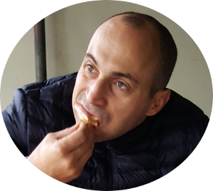

Lebenslauf

-
- Dezember 1977 – Geboren
- 1980 - 1984 – Plopilor Kindergarten, Schäßburg, Rumänien
- 1984 - 1988 - Grundschule Nr. 6, Schäßburg, Rumänien
- 1988 – 1992 – Sekundarschule Nr. 6, Schäßburg, Rumänien
- 1992 – 1995 – Berufsschule, Iernut, Rumänien
- 1995 - 1998 – Seral MIU High School, Schäßburg, Rumänien
- 1999 – 2005 – UMF Allgemeinmedizin, Neumarkt am Mieresch, Rumänien
- Jun 2005 – Lizenz in Allgemeinmedizin, Neumarkt am Mieresch, Rumänien
- Feb 1996 - Sep 1999 - Elektriker, Wartung und Reparatur von Mittel- und Niederspannungsnetzen, RENEL, Schäßburg, România
- Apr 2006 – Mai 2008 – Medizinischer Vertreter, Hoffmann LA Roche, Bukarest, Rumänien
- Sep 2008 – Jun 2009 – Chemiebetreiber, Eliokem, Akron, USA
- Mai 2010 – Feb 2019 – Assistenzarzt für Orthopädie/Traumatologie, Klinikum LD-SÜW, Landau, Deutschland
- Mär 2019 – Mär 2021 – Facharzt für Orthopädie/Traumatologie, Klinikum LD-SÜW, Landau, Deutschland
- Apr 2021 – Sep 2022 – Facharzt für Traumatologie mit Superspezialisierung, Ortenau Klinikum, Lahr, Deutschland
- Okt 2022 – Aktuell – Oberarzt Orthopädie/Traumatologie, Evangelisches Krankenhaus, Bad Dürkheim, Deutschland